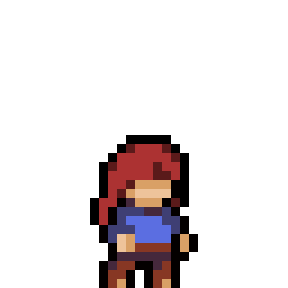
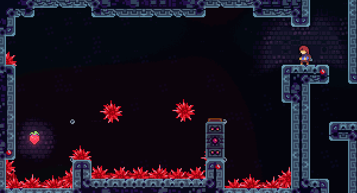
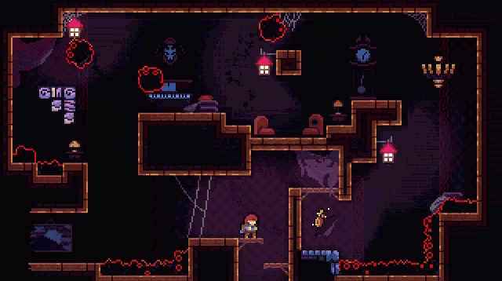
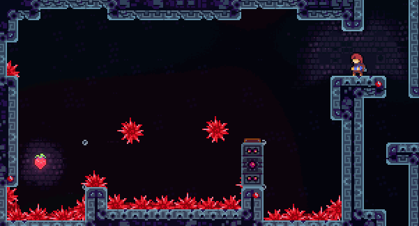
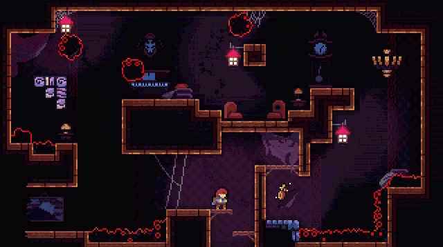

Vad är Celeste?
Celeste är ett mycket omtalat platformer spel som släpptes 2018 av spelstudion EXOK (extremely OK games). Celeste är känt för att vara otroligt svårt iblan trots att det barra finns tre inputs. Hoppa, klättra och en dash. Dessa tre kombinerat ger spelet en skyhög skill ceiling där man kan spendera flera hundra timmar bara på att försöka slå spelet så snabbt så möjligt, eller i mitt fall sammla alla jävla golden berries...
 



Vad handlar celeste om?
I Celeste spelar du som Madeline, en nybliven bergsbestigare som
försöker ta sig an mt Celeste. Under spelets gång kämpar du lika
mycket emot berget som dig själv, bokstavligen, då berget skapar en
ond version av dig själv som jagar efter dig och förstör.
Det är denna metaforiska och bokstavliga fajt mot dig själv som gör
celeste så fantastiskt, det låter ett platformer spel diskutera vad
det betyder att förbättra sig själv och om du är dina värsta
egenskaper, samtidigt som du slåss mot dem och boppar till skitbra
musik